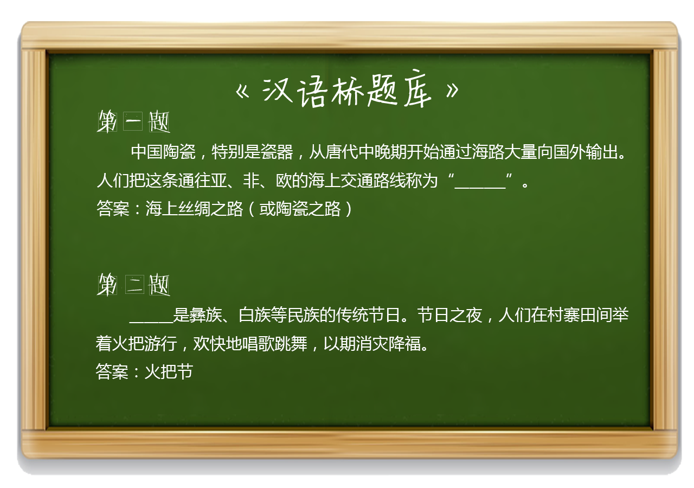

2017-2-28阅读（9,753）


汉字功夫深
来自卢旺达和美国的小朋友
知名演员元华
知识拓展：
汉字文化
汉字的字形本身就是艺术。每一个汉字方方正正、筋骨扎实、结构严谨，但又易于个性的驾驭。昔日象形的甲骨文早已中庸成了今天文件的文字，但汉字作为象形符号的表意功能始终未变。然而更令人称道的是，每一个汉字似乎都有精巧的构图，恰当的比例，使这个符号被赋予了太多的艺术内涵。
正因为有艺术的汉字才能有艺术的书法。春秋战国时苍颉的文字已经被各国变换成了互不相象的异体。战乱可以滋生一大批忧国忧民，奔走各国的纵横家，也可以滋生一大批一心想拯救社会、扶助国君的诸子，却无法使文人们琢磨如何改进他的字体。即使老庄、钟子期余伯牙这类耳根清净者，也未必会放弃通行官方的大纂。加之此时字都写在竹简或帛上，比起在纸上创作的游刃有余，是颇显困难的，但大纂从字体繁间来讲已经比甲骨文和祭祀器皿上的金文已是很大进步。汉字从这时候起，已经与绝对意义上的象形文字说再见。这是由书写器具上的革新决定的。我们必须承认字体和书法是逐渐发展起来的，每一次字体的出现，都是一定基础的成果，是衍变得到的。一个朝代的历史条件通过对人的生活思维的影响来影响着字体的衍变速度。我们可以翻一翻《尔雅》或是《说文解字》来找找汉字衍变的足迹。 秦朝因大纂笔画复杂，不适应统一后繁忙的公务需要，于是在统一文字改用省去了很多笔画的小纂。但这样仍不方便，于是程邈在监狱里创立了隶书来帮助他抄写公文。秦始皇闻讯大悦，免其罪，封御史。隶书得以广泛流行。这样历史条件的成熟，即统一的国家催生了字体的革新。魏晋时期，士人减省隶书的波磔，狂用楷书。这种规范、铿锵有力的字体时至今日都被视作是字迹工整、书写规范的典型并被作为范本，令广大“不拘一格”的同志唏嘘不已。但不管怎样，楷书的笔锋和筋骨，一股严正之风却是足以担当正统的名号的。 这时庆祝官体字的时代结束。很快东晋王羲之就以独具个性的行书震撼了古今。这样的行书，抛弃了楷书的规范，却继承了它的浩然正气。屏弃了草书的放肆，却遗留了它的癫狂。行书笔画连贯流畅，不拘泥于点滴，足是写字者自信和自主的性格体现。既打破了楷书的礼仪规范，又不肯像草书那样随意，却是大家风度。王羲之、颜真卿、苏轼、米芾，用他们的洒脱写下了一幅幅气势恢弘的书卷。 草书即章草、今草、狂草较之行书出现更早，因为早有狂人不喜欢楷书或隶书的格套迫不及待想要直抒胸臆了。章草始于汉初，是隶书的草体，今草之后的狂草，由唐人张旭所创，其狂野放纵似游龙一般的连书将书者狂放不羁的个性显露无遗。但草书虽然无定法，但它的落笔、起承和结构都恰倒好处，极具美感，决不像某些人以为字迹潦草的就是草书，这是对艺术的亵渎。 汉代以后各大书体相继出现，既是越来越扩大的国家的公务需要，同时也是文景“黄老无为”影响下的产物，还是晋代隐士之风的杰作。
总之只有这样一个中国才能产生这样的书法。它属于“士”这个中国特色的阶层，属于汉字，更属于中国文化。 练楷书可以使人心若止水，培养耐性，练行书可以使人挥洒自如，练草书大可高呼一首“一代天骄成吉思汗，只识弯弓射大雕”之后狂书一篇，彰显豪迈之大气。因此书法本身就是修身养性的良药。也难怪中国文人和帝王对它如此的偏爱。唐太宗为了得到《兰亭集序》不择手段，终使之埋入坟底，不见天日。这时候，书法，甚至超越了艺术。
（以上内容编辑自网络）
【答题互动】

【有关汉语桥】
“汉语桥”是由孔子学院总部/国家汉办举办的国际中文赛事，是世界人文交流领域的知名品牌活动 。“汉语桥”中文比赛已成为外国学生学习汉语，了解中国的重要平台，在中国与世界各国青年之间架起了一座沟通心灵的桥梁。
内容制作：晁壮、李畅